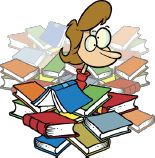
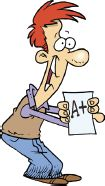

Concise Learning is about turning studying into learning and about turning information into knowledge. This book will teach you how to make this significant transformation in your studies through a learning method that involves visual mapping, critical thinking, and problem solving.
Don’t worry; this isn’t a book on learning theory. Rather, this book will provide you with a simple and intuitive, yet proven and powerful, method for learning and managing multiple sources of information.
You’ll learn to:


Everyone has the capacity to get As. What you need are simple changes in how you learn. Concise Learning is your easy-to-read and engaging guide to academic success, teaching you how to learn. This book will serve you as a learning blueprint that you can apply immediately.
Thousands of students have already gained control over their learning with the Concise Learning method (CLM) presented in this book and have successfully transitioned from a state of freshman anxiety and insecurity to one of independence, confidence, enjoyment, and success. I know you can do the same.
Welcome to the exciting and fun adventure of learning. With Concise Learning, your education and career goals are within reach.
Toni Krasnic